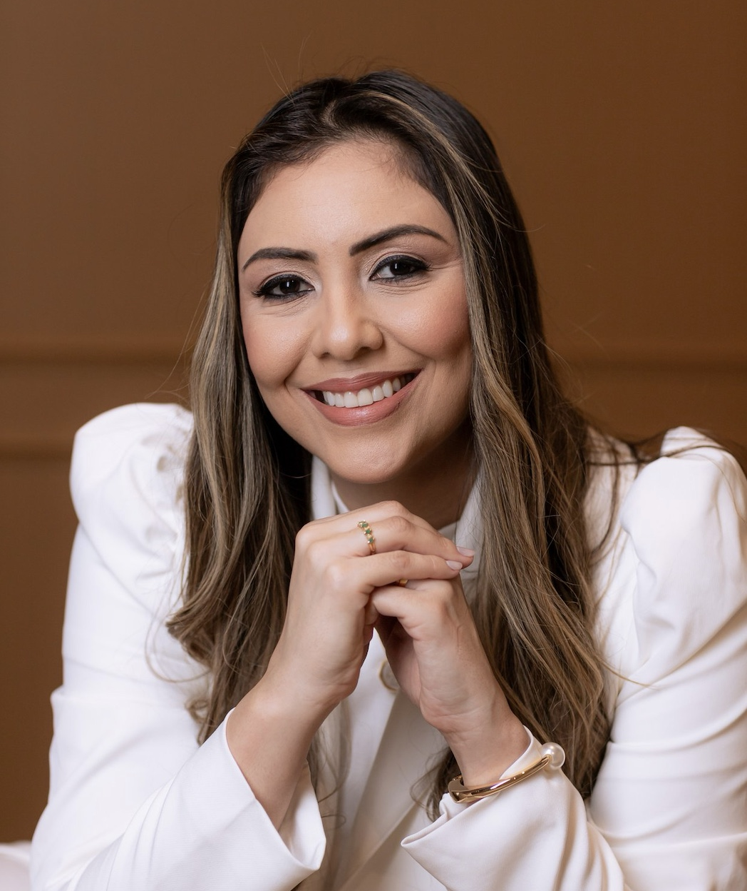

Desenvolvimento da fala
Dúvidas sobre comunicação, linguagem ou marcos do desenvolvimento.

CRM-GO 37.309
Cuidando de crianças com olhar individualizado. Como posso te ajudar hoje?
Lívia Limeira Ribeiro Camargo · CRM-GO 37.309
© 2026
Cuidado que acolhe cada história
Atendimento médico infantil com foco em desenvolvimento, TEA, TDAH e comportamento infantil.
Cuidando de crianças com olhar individualizado.
Atendimento em Goiânia e por teleconsulta
Sobre a Dra. Lívia
Entre o Direito e a Medicina, escolhi seguir o que sempre tocou meu coração: cuidar. Encontrei meu lugar no neurodesenvolvimento infantil e me apaixonei ainda mais pelo universo do TEA (Transtorno do Espectro Autista) e TDAH (Transtorno do Déficit de Atenção e Hiperatividade).
Hoje, caminho junto com cada criança e cada família, com escuta, carinho e propósito. Mais que trabalho, é amor em forma de missão.
Dra. Lívia Limeira CRM-GO 37.309
Um caminho em parceria
Um processo acolhedor, com espaço para ouvir a família e compreender cada criança.
Você conta um pouco sobre o que está buscando.
Escolhemos juntos a modalidade e um horário.
Um encontro para conhecer a história e as necessidades da criança.
Conversamos sobre próximos passos e continuidade do cuidado.
Cada família tem suas perguntas
Algumas situações podem levar a família a procurar orientação. Elas, por si só, não determinam um diagnóstico.
Dúvidas sobre comunicação, linguagem ou marcos do desenvolvimento.
Questões de atenção, organização ou participação nas atividades diárias.
Desafios de convivência, rotina, sono ou regulação emocional.
Busca por equilíbrio no uso de telas e nas atividades do dia a dia.
Duas formas de estar perto
Presencial
Atendimento presencial em consultório. Entre em contato para confirmar endereço e disponibilidade.
Ver localização no mapa Agendar presencialOnline
Uma consulta por videochamada, para conversar com a médica de onde você estiver. É necessário ter conexão estável e um ambiente reservado.
Tire suas dúvidas pelo WhatsApp Agendar onlineInformação para caminhar junto
No Instagram, compartilho reflexões e informações sobre desenvolvimento infantil, TEA, TDAH e comportamento.
Seguir no InstagramVamos conversar?
Fale com a equipe para saber mais sobre as modalidades e agendamentos.
CRM-GO 37.309
Atendimento presencial em Goiânia, GO
e por teleconsulta.